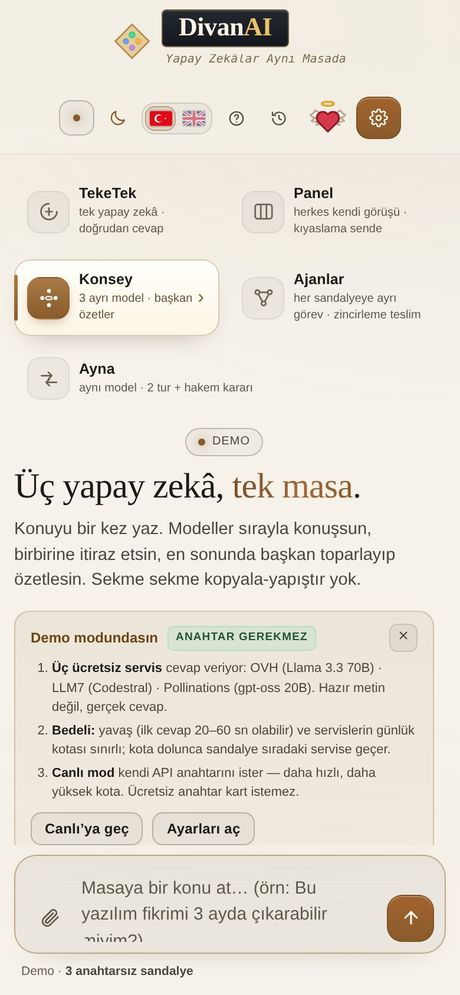

Telefonda kullanım: kurulum yok, ana ekrana ekle
DivanAI'nin mobil uygulaması yok ve olmayacak: uygulama zaten tek bir web sayfası. Telefonda tarayıcıdan açarsın, istersen ana ekrana ekleyip uygulama gibi kullanırsın.

Neden mağaza yok?
Mağaza uygulaması, aynı sayfayı bir kutunun içine koymak demek. DivanAI tek dosya olduğu için tarayıcıda aynı işi görüyor. Avantajı somut: güncelleme beklemek yok, izin istemek yok, sildiğinde cihazda iz kalmıyor, mağaza hesabı gerekmiyor.
Ana ekrana ekleme
iPhone / iPad (Safari): Paylaş düğmesi → Ana Ekrana Ekle → Ekle.
Android (Chrome): Sağ üstteki üç nokta → Ana ekrana ekle → Ekle.
Eklediğinde simge, ad ve tam ekran açılış gelir: tarayıcı çubuğu görünmez. Bu özellik için pakette `manifest.json` ve 192/512 piksel simgeler var; çevrimdışı açılış için servis çalışanı (`sw.js`) da pakette.
Telefonda ne değişiyor?
- Sol menü çekmeceye dönüşür; alttaki yazı kutusu büyür.
- Masa tek sütun olur; uzun cevaplar kaydırılarak okunur.
- Dört sandalyeli Konsey telefonda da çalışır ama yoğun bir ekran; TekeTek daha rahat.
- Ekran görüntüsü veya fotoğraf eklemek için ataç düğmesi var.
Veri tüketimi
Uygulamanın kendisi ~800 KB; bir kez yüklendikten sonra tarayıcı önbelleğinden açılır. Asıl veri modelin cevabıdır — uzun cevaplar daha çok indirir. Mobil veride dikkat etmen gereken tek şey bu.
Sık sorulan sorular
Uygulama mağazasında var mı?
Hayır. Tarayıcıdan açılır; ana ekrana ekleyince uygulama gibi davranır.
Çevrimdışı çalışır mı?
Arayüz açılır ama cevap üretilemez: cevap seçtiğin servisten gelir, internet gerekir.
Pil/ısı sorunu olur mu?
Uygulama sayfa içinde ağır iş yapmaz; yük modeldedir, cihazında değil.
Masaüstünde de aynı mı?
Aynı dosya. Masaüstünde sol menü açık durur, telefonda çekmeceye dönüşür.